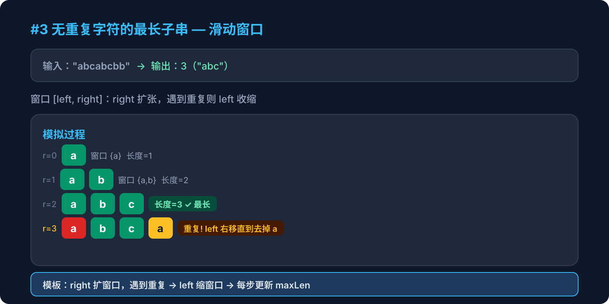

Hot 100 · 滑动窗口 · 第2周

给定一个字符串 s，请你找出其中不含有重复字符的最长子串的长度。
输入：s = "abcabcbb"
输出：3
解释：无重复字符的最长子串是 "abc"，长度为 3暴力法怎么做？为什么不好？
[left, right]，right 不断右移扩大窗口；遇到重复字符就 left 右移缩小窗口，直到窗口内无重复。每一步都更新最大长度。
点击每一步展开详细说明
创建一个 Set，用来存储当前窗口 [left, right] 内的所有字符。
Set 的 has() 和 delete() 都是 O(1)，非常适合做"是否重复"的判断。
用 for 循环让 right 从 0 遍历到 s.length - 1。
每次循环尝试把 s[right] 加入窗口。
如果 s[right] 已经在 Set 中，说明窗口内有重复了。
此时需要不断把 s[left] 从 Set 中删除，并 left++，直到窗口内没有 s[right] 这个字符。
while 循环逐个删除，因为重复的字符不一定在 left 位置，可能在中间。
窗口调整完成后，当前窗口长度为 right - left + 1。
maxLen = Math.max(maxLen, right - left + 1)
例如 "abcabcbb"：
// right=0: set={a} maxLen=1
// right=1: set={a,b} maxLen=2
// right=2: set={a,b,c} maxLen=3
// right=3: s[3]='a'重复! left移到1 → set={b,c,a} maxLen=3
// right=4: s[4]='b'重复! left移到2 → set={c,a,b} maxLen=3
// ... 最终返回 3function lengthOfLongestSubstring(s) {
const set = new Set()
let left = 0, maxLen = 0
for (let right = 0; right < s.length; right++) {
while (set.has(s[right])) {
set.delete(s[left])
left++
}
set.add(s[right])
maxLen = Math.max(maxLen, right - left + 1)
}
return maxLen
}| 维度 | 复杂度 | 说明 |
|---|---|---|
| 时间 | O(n) | left 和 right 各最多移动 n 次，总共 2n |
| 空间 | O(min(m, n)) | m 为字符集大小，Set 最多存 m 个字符 |
用 Map 代替 Set 可以更快吗？
这是所有滑动窗口题的通用模板，记住这三步就能解决大部分滑动窗口问题。
可变长度窗口
窗口大小不固定
根据条件动态伸缩
固定长度窗口
窗口大小 = 目标串长度
每次右移1步左也移1步